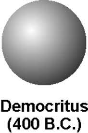

.jpg) Atomos, Not to be cut.
Democristus' theory
Atomos, Not to be cut.
Democristus' theory
Matter could not be divided into smaller and smaller pieces forever, eventually the smallest possible piece would be obtainde.
This piece would be indivisible, and it would be called atomos meaning not to be cut.
 This theory was ignored and forgotten for more than 2000 years!Why was it ignored ? Answer Here!
If you skip the Answer, go down.
We will continue our journey withJohn Dalton